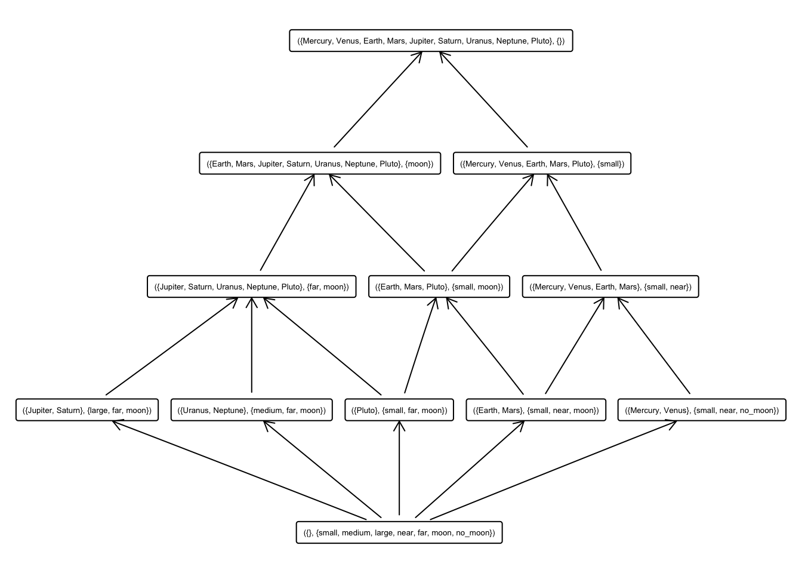
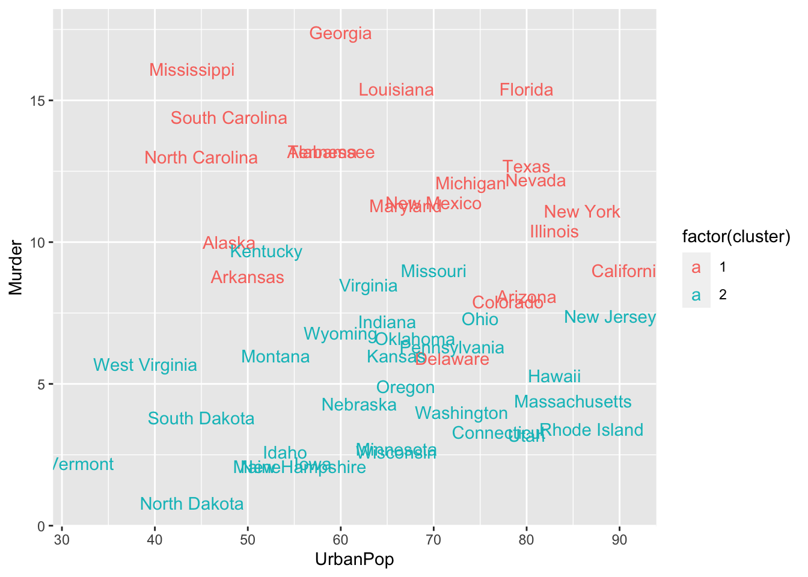

Capítulo 9 Formal Concept Analysis
Port-Royal logic (traditional logic): formal notion of concept, Arnauld A., Nicole P.: La logique ou l’art de penser, 1662 (Logic Or The Art Of Thinking, CUP, 2003): concept = extent (objects) + intent (attributes)
G. Birkhoff (1940s): work on lattices and related mathematical structures, emphasizes applicational aspects of lattices in data analysis.
Barbut M., Monjardet B.: Ordre et classiffication, algebre et combinatoire. Hachette, Paris, 1970.
Wille R.: Restructuring lattice theory: an approach based on hierarchies of concepts. In: I. Rival (Ed.): Ordered Sets. Reidel, Dordrecht, 1982, pp. 445-470.
Ganter B., Wille R.: Formal Concept Analysis. Springer, 1999.
Application of FCA:
- knowledge extraction
- clustering and classification
- machine learning
- concepts, ontologies
- rules, association rules, attribute implications
9.1 Background in FCA
FCA provides methods to describe the relationship between a set of objects \(G\) and a set of attributes \(M\).
We show the main methods of FCA using the main functionalities and data structures of the fcaR package.
We load the fcaR package by:
Formal Context, \(\mathbf{ K} := (G, M, I)\)
objects <- c("Mercury", "Venus", "Earth", "Mars",
"Jupiter", "Saturn", "Uranus", "Neptune",
"Pluto")
attributes <- c("small", "medium", "large",
"near", "far",
"moon", "no_moon")
planets <- matrix(0, nrow = length(objects),
ncol = length(attributes))
rownames(planets) <- objects
colnames(planets) <- attributes
planets["Mercury", c("small", "near", "no_moon")] <- 1
planets["Venus", c("small", "near", "no_moon")] <- 1
planets["Earth", c("small", "near", "moon")] <- 1
planets["Mars", c("small", "near", "moon")] <- 1
planets["Jupiter", c("large", "far", "moon")] <- 1
planets["Saturn", c("large", "far", "moon")] <- 1
planets["Uranus", c("medium", "far", "moon")] <- 1
planets["Neptune", c("medium", "far", "moon")] <- 1
planets["Pluto", c("small", "far", "moon")] <- 1
fc_planets <- FormalContext$new(planets)knitr::kable(planets, format = "html", booktabs = TRUE)| small | medium | large | near | far | moon | no_moon | |
|---|---|---|---|---|---|---|---|
| Mercury | 1 | 0 | 0 | 1 | 0 | 0 | 1 |
| Venus | 1 | 0 | 0 | 1 | 0 | 0 | 1 |
| Earth | 1 | 0 | 0 | 1 | 0 | 1 | 0 |
| Mars | 1 | 0 | 0 | 1 | 0 | 1 | 0 |
| Jupiter | 0 | 0 | 1 | 0 | 1 | 1 | 0 |
| Saturn | 0 | 0 | 1 | 0 | 1 | 1 | 0 |
| Uranus | 0 | 1 | 0 | 0 | 1 | 1 | 0 |
| Neptune | 0 | 1 | 0 | 0 | 1 | 1 | 0 |
| Pluto | 1 | 0 | 0 | 0 | 1 | 1 | 0 |
Two mappings can be defined:
intent: \((\ )'\colon 2^G \to 2^M\) with, for all \(A\subseteq G\), \(A' = \{m \in M \mid g\, I\, m \mbox{ for all } g \in A\}\) for all \(A\subseteq G\).
extent: \((\ )'\colon 2^M \to 2^G\) with, for all \(B\subseteq M\), \(B' = \{g \in G \mid g\, I\, m \mbox{ for all } m \in B\}\).
That is, the intent of a set of objects is the set of their common attributes:
# Define a set of objects
S <- Set$new(attributes = fc_planets$objects)
S$assign(Earth = 1, Mars = 1)
cat("Given the set of objects:")Given the set of objects:
S{Earth, Mars}
cat("The intent is:")The intent is:
# Compute the intent of S
fc_planets$intent(S){small, near, moon}
Analogously, the extent of a set of attributes is the set of objects which possess all the attributes in the given set:
# Define a set of objects
S <- Set$new(attributes = fc_planets$attributes)
S$assign(moon = 1, large = 1)
cat("Given the set of attributes:")Given the set of attributes:
S{large, moon}
cat("The extent is:")The extent is:
# Compute the extent of S
fc_planets$extent(S){Jupiter, Saturn}
This pair of mappings is a Galois connection.
The composition of intent and extent is the closure of a set of attributes:
# Compute the closure of S
print("El conjunto de objetos ")[1] “El conjunto de objetos”
S{large, moon}
print("tiene como cerrado")[1] “tiene como cerrado”
Sc <- fc_planets$closure(S)
Sc{large, far, moon}
This means that all planets which have the attributes moon and large also have far in common.
Definition: A formal concept is a pair \((A,B)\) such that \(A \subseteq G\), \(B \subseteq M\), \(A' = B\) and \(B' = A\). Consequently, \(A\) and \(B\) are closed sets of objects and attributes, respectively.
# Define a set of objects
S <- Set$new(attributes = fc_planets$attributes)
S$assign(moon = 1, large = 1, far= 1)
print("Given the set of attributes:")[1] “Given the set of attributes:”
S{large, far, moon}
print("The extent is:")[1] “The extent is:”
# Compute the extent of S
extent <- fc_planets$extent(S)
extent{Jupiter, Saturn}
print("And the intent of this one is:")[1] “And the intent of this one is:”
fc_planets$intent(extent){large, far, moon}
\(\big(\{Jupiter, Saturn\},\{large, far, moon\}\big)\) is a concept. It is a maximal cluster.
9.1.1 Datasets
We are going to work with two datasets, a crisp one and a fuzzy one.
The classical (binary) dataset is the well-known planets formal context, presented in
Wille R (1982). “Restructuring Lattice Theory: An Approach Based on Hierarchies of Concepts.” In Ordered Sets, pp. 445–470. Springer.
| small | medium | large | near | far | moon | no_moon | |
|---|---|---|---|---|---|---|---|
| Mercury | 1 | 0 | 0 | 1 | 0 | 0 | 1 |
| Venus | 1 | 0 | 0 | 1 | 0 | 0 | 1 |
| Earth | 1 | 0 | 0 | 1 | 0 | 1 | 0 |
| Mars | 1 | 0 | 0 | 1 | 0 | 1 | 0 |
| Jupiter | 0 | 0 | 1 | 0 | 1 | 1 | 0 |
| Saturn | 0 | 0 | 1 | 0 | 1 | 1 | 0 |
| Uranus | 0 | 1 | 0 | 0 | 1 | 1 | 0 |
| Neptune | 0 | 1 | 0 | 0 | 1 | 1 | 0 |
| Pluto | 1 | 0 | 0 | 0 | 1 | 1 | 0 |
The other formal context is fuzzy and is defined by the following matrix I:
| P1 | P2 | P3 | P4 | P5 | P6 | |
|---|---|---|---|---|---|---|
| O1 | 0.0 | 0.0 | 0.5 | 0.5 | 1.0 | 0 |
| O2 | 1.0 | 1.0 | 1.0 | 0.0 | 0.0 | 0 |
| O3 | 0.5 | 0.5 | 0.0 | 0.0 | 0.0 | 1 |
| O4 | 0.0 | 0.0 | 0.0 | 1.0 | 0.5 | 0 |
| O5 | 0.0 | 0.0 | 1.0 | 0.5 | 0.0 | 0 |
| O6 | 0.5 | 0.5 | 0.0 | 0.0 | 0.0 | 1 |
9.2 Working with Formal Contexts - datasets
The first step when using the fcaR package to analyse a formal context is to create an object of class FormalContext which will store all the information related to the context.
In our examples, we create two objects:
Internally, the object stores information about whether the context is binary or the names of objects and attributes, which are taken from the rownames and colnames of the provided matrix.
9.2.1 Plotting, printing and latex-ing the FormalContext
Once created the FormalContext objects, we can print them or plot them as heatmaps (with functions print() and plot()):
FormalContext with 9 objects and 7 attributes.
small medium large near far moon no_moon
Mercury X X X
Venus X X X
Earth X X X
Mars X X X
Jupiter X X X
Saturn X X X
Uranus X X X
Neptune X X X
Pluto X X X
FormalContext with 6 objects and 6 attributes.
P1 P2 P3 P4 P5 P6
O1 0 0 0.5 0.5 1 0
O2 1 1 1 0 0 0
O3 0.5 0.5 0 0 0 1
O4 0 0 0 1 0.5 0
O5 0 0 1 0.5 0 0
O6 0.5 0.5 0 0 0 1

Also, we can export the formal context as a LaTeX table:
9.2.2 Closures
The basic operation in FCA is the computation of closures given an attribute set, by using the two derivation operators, extent and intent.
The intent of a (probably fuzzy) set of objects is the set of their common attributes:
{Earth, Mars} {small, near, moon}
Analogously, the extent of a set of attributes is the set of objects which possess all the attributes in the given set:
{large, moon} {Jupiter, Saturn}
The composition of intent and extent is the closure of a set of attributes:
{large, far, moon}
This means that all planets which have the attributes moon and large also have far in common.
We can check whether a set is closed (that is, it is equal to its closure), using is_closed():
[1] FALSE [1] TRUE
9.2.3 Clarification and Reduction
An interesting point when managing formal contexts is the ability to reduce the context, removing redundancies, while retaining all the knowledge. This is accomplished by two functions: clarify(), which removes duplicated attributes and objects (columns and rows in the original matrix); and reduce(), which uses closures to remove dependent attributes, but only on binary formal contexts. The resulting FormalContext is equivalent to the original one in both cases.
FormalContext with 5 objects and 7 attributes.
small medium large near far moon no_moon
Pluto X X X
[Mercury, Venus] X X X
[Earth, Mars] X X X
[Jupiter, Saturn] X X X
[Uranus, Neptune] X X X
FormalContext with 5 objects and 5 attributes.
P3 P4 P5 P6 [P1, P2]
O1 0.5 0.5 1 0 0
O2 1 0 0 0 1
O4 0 1 0.5 0 0
O5 1 0.5 0 0 0
[O3, O6] 0 0 0 1 0.5
Note that merged attributes or objects are stored in the new formal context by using squared brackets to unify them, e.g. [Mercury, Venus].
9.2.4 Extracting Implications and Concepts
The function to extract the canonical basis of implications and the concept lattice is find_implications(). Its use is to store a ConceptLattice and an ImplicationSet objects internally in the FormalContext object after running the NextClosure algorithm.
It can be used both for binary and fuzzy formal contexts, resulting in binary or fuzzy concepts and implications:
We can inspect the results as:
A set of 12 concepts: 1: ({Mercury, Venus, Earth, Mars, Jupiter, Saturn, Uranus, Neptune, Pluto}, {}) 2: ({Earth, Mars, Jupiter, Saturn, Uranus, Neptune, Pluto}, {moon}) 3: ({Jupiter, Saturn, Uranus, Neptune, Pluto}, {far, moon}) 4: ({Jupiter, Saturn}, {large, far, moon}) 5: ({Uranus, Neptune}, {medium, far, moon}) 6: ({Mercury, Venus, Earth, Mars, Pluto}, {small}) 7: ({Earth, Mars, Pluto}, {small, moon}) 8: ({Pluto}, {small, far, moon}) 9: ({Mercury, Venus, Earth, Mars}, {small, near}) 10: ({Mercury, Venus}, {small, near, no_moon}) 11: ({Earth, Mars}, {small, near, moon}) 12: ({}, {small, medium, large, near, far, moon, no_moon}) Implication set with 10 implications. Rule 1: {no_moon} -> {small, near} Rule 2: {far} -> {moon} Rule 3: {near} -> {small} Rule 4: {large} -> {far, moon} Rule 5: {medium} -> {far, moon} Rule 6: {medium, large, far, moon} -> {small, near, no_moon} Rule 7: {small, near, moon, no_moon} -> {medium, large, far} Rule 8: {small, near, far, moon} -> {medium, large, no_moon} Rule 9: {small, large, far, moon} -> {medium, near, no_moon} Rule 10: {small, medium, far, moon} -> {large, near, no_moon}
9.3 Concept Lattice
We are going to use the previously computed concept lattices for the two FormalContext objects.
9.3.1 Plot, print and LaTeX
The concept lattice can be plotted using a Hasse diagram and the function plot() inside the ConceptLattice component:

If one desires to get the list of concepts printed, or in \(\LaTeX\) format, just:
A set of 12 concepts: 1: ({Mercury, Venus, Earth, Mars, Jupiter, Saturn, Uranus, Neptune, Pluto}, {}) 2: ({Earth, Mars, Jupiter, Saturn, Uranus, Neptune, Pluto}, {moon}) 3: ({Jupiter, Saturn, Uranus, Neptune, Pluto}, {far, moon}) 4: ({Jupiter, Saturn}, {large, far, moon}) 5: ({Uranus, Neptune}, {medium, far, moon}) 6: ({Mercury, Venus, Earth, Mars, Pluto}, {small}) 7: ({Earth, Mars, Pluto}, {small, moon}) 8: ({Pluto}, {small, far, moon}) 9: ({Mercury, Venus, Earth, Mars}, {small, near}) 10: ({Mercury, Venus}, {small, near, no_moon}) 11: ({Earth, Mars}, {small, near, moon}) 12: ({}, {small, medium, large, near, far, moon, no_moon})9.3.2 Getting all extents, intents and retrieving concepts
For a ConceptLattice, one may want to retrieve particular concepts, using a subsetting as in R:
A set of 2 concepts: 1: ({Earth, Mars, Jupiter, Saturn, Uranus, Neptune, Pluto}, {moon}) 2: ({Jupiter, Saturn, Uranus, Neptune, Pluto}, {far, moon})
Or get all the extents and all the intents of all concepts, as sparse matrices:
9 x 12 sparse Matrix of class “dgCMatrix”
[1,] 1 . . . . 1 . . 1 1 . . [2,] 1 . . . . 1 . . 1 1 . . [3,] 1 1 . . . 1 1 . 1 . 1 . [4,] 1 1 . . . 1 1 . 1 . 1 . [5,] 1 1 1 1 . . . . . . . . [6,] 1 1 1 1 . . . . . . . . [7,] 1 1 1 . 1 . . . . . . . [8,] 1 1 1 . 1 . . . . . . . [9,] 1 1 1 . . 1 1 1 . . . . 7 x 12 sparse Matrix of class “dgCMatrix”
[1,] . . . . . 1 1 1 1 1 1 1 [2,] . . . . 1 . . . . . . 1 [3,] . . . 1 . . . . . . . 1 [4,] . . . . . . . . 1 1 1 1 [5,] . . 1 1 1 . . 1 . . . 1 [6,] . 1 1 1 1 . 1 1 . . 1 1 [7,] . . . . . . . . . 1 . 1
9.3.3 Concept support
First, the support of an itemset is:
\[ supp(X)=\frac{X^\prime}{G} \]
The support of a concept $\langle A, B\rangle$ (A is the extent of the concept and B is the intent) is the cardinality (relative) of the extent - number of objects of the extent.
The support of concepts can be computed using the function support():
[1] 1.0000000 0.7777778 0.5555556 0.2222222 0.2222222 0.5555556 0.3333333 [8] 0.1111111 0.4444444 0.2222222 0.2222222 0.0000000
The support of itemsets and concepts is used to mine all the knowledge: Algorithm Titanic (computing iceberg concept lattices)
9.3.4 Sublattices
When the concept lattice is too large, it can be useful in certain occasions to just work with a sublattice of the complete lattice. To this end, we use the sublattice() function.
For instance, to build the sublattice of those concepts with support greater than 0.5, we can do:
A set of 13 concepts: 1: ({O1, O2, O3, O4, O5, O6}, {}) 2: ({O1, O4, O5}, {P4 [0.5]}) 3: ({O1, O4}, {P4 [0.5], P5 [0.5]}) 4: ({O1, O2, O5}, {P3 [0.5]}) 5: ({O1, O5}, {P3 [0.5], P4 [0.5]}) 6: ({O1}, {P3 [0.5], P4 [0.5], P5}) 7: ({O1 [0.5], O2, O5}, {P3}) 8: ({O1 [0.5], O5}, {P3, P4 [0.5]}) 9: ({O1 [0.5]}, {P3, P4, P5}) 10: ({O2, O3, O6}, {P1 [0.5], P2 [0.5]}) 11: ({O3, O6}, {P1 [0.5], P2 [0.5], P6}) 12: ({O2}, {P1, P2, P3}) 13: ({}, {P1, P2, P3, P4, P5, P6})
And we can plot just the sublattice:

9.3.5 Subconcepts, superconcepts, infimum and supremum
It may be interesting to use the notions of subconcept and superconcept. Given a concept, we can compute all its subconcepts and all its superconcepts:
A set of 1 concepts: 1: ({Uranus, Neptune}, {medium, far, moon}) A set of 2 concepts: 1: ({Uranus, Neptune}, {medium, far, moon}) 2: ({}, {small, medium, large, near, far, moon, no_moon}) A set of 4 concepts: 1: ({Mercury, Venus, Earth, Mars, Jupiter, Saturn, Uranus, Neptune, Pluto}, {}) 2: ({Earth, Mars, Jupiter, Saturn, Uranus, Neptune, Pluto}, {moon}) 3: ({Jupiter, Saturn, Uranus, Neptune, Pluto}, {far, moon}) 4: ({Uranus, Neptune}, {medium, far, moon})
Also, we can define infimum and supremum of a set of concepts as the greatest common subconcept of all the given concepts, and the lowest common superconcept of them, and can be computed by:
A set of 3 concepts: 1: ({Uranus, Neptune}, {medium, far, moon}) 2: ({Mercury, Venus, Earth, Mars, Pluto}, {small}) 3: ({Earth, Mars, Pluto}, {small, moon}) ({Mercury, Venus, Earth, Mars, Jupiter, Saturn, Uranus, Neptune, Pluto}, {}) ({}, {small, medium, large, near, far, moon, no_moon})
9.3.6 Join- and meet- irreducible elements
Theorem:
In a complete lattice, an element is called supremum-irreducible or join-irreducible if it cannot be written as the supremum of other elements and infimum-irreducible or meet-irreducible if it can not be expressed as the infimum of other elements.

The irreducible elements with respect to join (supremum) and meet (infimum) can be computed for a given concept lattice:
A set of 5 concepts: 1: ({Jupiter, Saturn}, {large, far, moon}) 2: ({Uranus, Neptune}, {medium, far, moon}) 3: ({Pluto}, {small, far, moon}) 4: ({Mercury, Venus}, {small, near, no_moon}) 5: ({Earth, Mars}, {small, near, moon}) A set of 7 concepts: 1: ({Earth, Mars, Jupiter, Saturn, Uranus, Neptune, Pluto}, {moon}) 2: ({Jupiter, Saturn, Uranus, Neptune, Pluto}, {far, moon}) 3: ({Jupiter, Saturn}, {large, far, moon}) 4: ({Uranus, Neptune}, {medium, far, moon}) 5: ({Mercury, Venus, Earth, Mars, Pluto}, {small}) 6: ({Mercury, Venus, Earth, Mars}, {small, near}) 7: ({Mercury, Venus}, {small, near, no_moon})
This are the concepts used to build the standard context, mentioned above.
9.4 Exercises
- Compute the intent of
EarthandEarth,Mars, Mercury(use the argument attributes in the class Set).
{Mercury, Earth, Mars} Given the set of objects:{Earth} The intent is:{small, near, moon} {small, near}
- Compute the extent of
largeandfar,large(use the argument attributes in the class Set) and save the result in a variablee1, e2.
Given the set of objects:{large} {large, far} The extent is:{Jupiter, Saturn} {Jupiter, Saturn}
Compute the intent of variables
e1and also ofe2. {large, far, moon} {large, far, moon}With the information from the above questions tell me a concept. Check with any command of fcaR package.
Compute the closure of
no_moon
{small, near, no_moon} ({Earth, Mars, Jupiter, Saturn, Uranus, Neptune, Pluto}, {moon})
- Compute all the concepts and plot them. How many are there? Show the fist and the last (use subsetting).
A set of 2 concepts: 1: ({Mercury, Venus, Earth, Mars, Jupiter, Saturn, Uranus, Neptune, Pluto}, {}) 2: ({}, {small, medium, large, near, far, moon, no_moon})
- Compute the major concept (in lattice) that has moon. The same with no_moon. Locate both in the lattice to understand the meaning.
({Earth, Mars, Jupiter, Saturn, Uranus, Neptune, Pluto}, {moon}) ({Mercury, Venus}, {small, near, no_moon})
- Compute the minor concept (in lattice) that has Pluto The same with Earth. Locate both in the lattice to understand the meaning.
({Pluto}, {small, far, moon}) ({Earth, Mars}, {small, near, moon})
- Compute the meet irreducible elements in the lattice.
A set of 7 concepts: 1: ({Earth, Mars, Jupiter, Saturn, Uranus, Neptune, Pluto}, {moon}) 2: ({Jupiter, Saturn, Uranus, Neptune, Pluto}, {far, moon}) 3: ({Jupiter, Saturn}, {large, far, moon}) 4: ({Uranus, Neptune}, {medium, far, moon}) 5: ({Mercury, Venus, Earth, Mars, Pluto}, {small}) 6: ({Mercury, Venus, Earth, Mars}, {small, near}) 7: ({Mercury, Venus}, {small, near, no_moon})
- Compute the sublattice of the concept in the irreducible elements
A set of 12 concepts: 1: ({Mercury, Venus, Earth, Mars, Jupiter, Saturn, Uranus, Neptune, Pluto}, {}) 2: ({Earth, Mars, Jupiter, Saturn, Uranus, Neptune, Pluto}, {moon}) 3: ({Jupiter, Saturn, Uranus, Neptune, Pluto}, {far, moon}) 4: ({Jupiter, Saturn}, {large, far, moon}) 5: ({Uranus, Neptune}, {medium, far, moon}) 6: ({Mercury, Venus, Earth, Mars, Pluto}, {small}) 7: ({Earth, Mars, Pluto}, {small, moon}) 8: ({Pluto}, {small, far, moon}) 9: ({Mercury, Venus, Earth, Mars}, {small, near}) 10: ({Mercury, Venus}, {small, near, no_moon}) 11: ({Earth, Mars}, {small, near, moon}) 12: ({}, {small, medium, large, near, far, moon, no_moon})
- Compute the sublattice of the concept in the irreducible elements removing the first element in the list of irreducible elements. Plot this sublattice.
A set of 9 concepts: 1: ({Mercury, Venus, Earth, Mars, Jupiter, Saturn, Uranus, Neptune, Pluto}, {}) 2: ({Jupiter, Saturn, Uranus, Neptune, Pluto}, {far, moon}) 3: ({Jupiter, Saturn}, {large, far, moon}) 4: ({Uranus, Neptune}, {medium, far, moon}) 5: ({Mercury, Venus, Earth, Mars, Pluto}, {small}) 6: ({Pluto}, {small, far, moon}) 7: ({Mercury, Venus, Earth, Mars}, {small, near}) 8: ({Mercury, Venus}, {small, near, no_moon}) 9: ({}, {small, medium, large, near, far, moon, no_moon}) 
- Develop a function returning the index and also the labels in all the concepts (inside the formal context) having a vector with attributes. HOMEWORK.
9.5 Implications in FCA
This is a summary of some of the functionalities introduced in package fcaR:
- Computing implications and concepts using Ganter’s algorithm.
- Visualization of the concept lattice.
- Removal of redundancies in implications.
- Computation of closures.
9.5.0.1 Data
The datasets in this vignette come from this paper.
9.5.2 Computing Implications and Concepts
Once we create the formal context object, with the previous data matrix I, we can compute all concepts and implications using Ganter’s algorithm: [1] 7 LHS RHS 2.142857 1.857143
The obtained implications are: Implication set with 7 implications. Rule 1: {P6} -> {P1, P2} Rule 2: {P5} -> {P4} Rule 3: {P3, P4, P5} -> {P2} Rule 4: {P2, P4} -> {P3, P5} Rule 5: {P1, P4} -> {P2, P3, P5, P6} Rule 6: {P1, P3} -> {P2} Rule 7: {P1, P2, P3, P6} -> {P4, P5}

9.5.3 Redudancy Removal
Let us apply some simplifcation rules: [1] 7 LHS RHS 1.714286 1.857143
The transformed ruleset: Implication set with 7 implications. Rule 1: {P6} -> {P1, P2} Rule 2: {P5} -> {P4} Rule 3: {P3, P5} -> {P2} Rule 4: {P2, P4} -> {P3, P5} Rule 5: {P1, P4} -> {P2, P3, P5, P6} Rule 6: {P1, P3} -> {P2} Rule 7: {P3, P6} -> {P4, P5}
9.5.4 Fuzzy version
The fuzzy version of the data appears in Table 2 in the mentioned paper.
9.5.4.1 Computing Implications and Concepts
As before, we build the formal context object and compute all implications:
[1] 12 LHS RHS 1.541667 1.916667
The extracted ruleset is: Implication set with 12 implications. Rule 1: {P6 [0.5]} -> {P1 [0.5], P2 [0.5], P6} Rule 2: {P5 [0.5]} -> {P4 [0.5]} Rule 3: {P3 [0.5], P4 [0.5], P5 [0.5]} -> {P2, P5} Rule 4: {P3 [0.5], P4} -> {P3} Rule 5: {P2 [0.5], P4 [0.5]} -> {P2, P3 [0.5], P5} Rule 6: {P2 [0.5], P3 [0.5]} -> {P2} Rule 7: {P2, P3, P4 [0.5], P5} -> {P4} Rule 8: {P1 [0.5], P4 [0.5]} -> {P1, P2, P3, P4, P5, P6} Rule 9: {P1 [0.5], P3 [0.5]} -> {P1, P2, P3} Rule 10: {P1 [0.5], P2} -> {P1} Rule 11: {P1, P2 [0.5]} -> {P2} Rule 12: {P1, P2, P3, P6} -> {P4, P5}


9.5.4.3 Redudancy Removal
Let us apply some functions to remove redudancies in the set of implications:
[1] 12 LHS RHS 1.541667 1.916667 [1] 12 LHS RHS 1.458333 1.916667 [1] 12 LHS RHS 1.458333 1.916667
The reduced ruleset is: Implication set with 12 implications. Rule 1: {P6 [0.5]} -> {P1 [0.5], P2 [0.5], P6} Rule 2: {P5 [0.5]} -> {P4 [0.5]} Rule 3: {P3 [0.5], P5 [0.5]} -> {P2, P5} Rule 4: {P3 [0.5], P4} -> {P3} Rule 5: {P2 [0.5], P4 [0.5]} -> {P2, P3 [0.5], P5} Rule 6: {P2 [0.5], P3 [0.5]} -> {P2} Rule 7: {P2, P3, P5} -> {P4} Rule 8: {P1 [0.5], P4 [0.5]} -> {P1, P2, P3, P4, P5, P6} Rule 9: {P1 [0.5], P3 [0.5]} -> {P1, P2, P3} Rule 10: {P1 [0.5], P2} -> {P1} Rule 11: {P1, P2 [0.5]} -> {P2} Rule 12: {P1, P2, P3, P6} -> {P4, P5}
9.6 Exercise
- From an implication extracted from a formal cotext return the string representig the implication:
> cadena <- impl.as.character(Implication)
> cadena
> "a,b -> c,d"
Use the function:
impl.as.character <- function(Implication ){
xxxx
return{cadena}
}
- From a string add the implication represented in the string to an implicational set:
cadena <- "a,b -> c,d"
implicationsNew <- add_implication(cadena,Implications)Use the function:
add_implication <- function(stringImplication,ImplicationSet){
xxxx
return{ImplicationSetNew}
}
9.7 Simplification Logic for Mushroom Dataset”
This is a simple example of some of the functionalities introduced in package fcaR:
- Import from/export to
arulesformat. - Removal of redundancies in implications.
- Computation of closures.
9.7.1 Data
In this example, we’ll use the well-known Mushroom dataset, from the arules package.
We’ll use the a priori algorithm to extract a large number of implications from the dataset.
Apriori
Parameter specification: confidence minval smax arem aval originalSupport maxtime support minlen 1 0.1 1 none FALSE TRUE 5 0.1 1 maxlen target ext 10 rules TRUE
Algorithmic control: filter tree heap memopt load sort verbose 0.1 TRUE TRUE FALSE TRUE 2 TRUE
Absolute minimum support count: 812
set item appearances …[0 item(s)] done [0.00s]. set transactions …[114 item(s), 8124 transaction(s)] done [0.01s]. sorting and recoding items … [53 item(s)] done [0.00s]. creating transaction tree … done [0.00s]. checking subsets of size 1 2 3 4 5 6 7 8 9 10 done [2.08s]. writing … [1799427 rule(s)] done [0.16s]. creating S4 object … done [0.70s].
The number of implications extracted by the algorithm (with this configuration) is length(mush) = 1799427.
9.7.2 Preprocessing
Next step is to remove the redundant rules in the implications set. To this end, let us use the is.redundant() function in arules.
user system elapsed
4.675 0.275 5.005
After this, the number of implications is length(mush_clean) = 2002, that is, just a 0.111 percent of the original ruleset.
9.7.3 Importing in fcaR
To use the functionalities in this package, one must import all objects (the formal context and implications above) into our data model.
This is accomplished by just typing:
We can check some of the properties of the ruleset:
[1] 2002 LHS RHS 3.038462 1.000000
9.7.4 Applying Rules
We can improve the redudancy removal performed by arules, using some simplification rules. Currently, the following rules are implemented:
- Composition.
- Generalization.
- Simplification.
- R-Simplification
We can apply them one by one, just to see their effect, or we could use them sequentially.
[1] 961 LHS RHS 3.122789 2.083247
[1] 961 LHS RHS 3.122789 1.072841
Also, we can compute the support of each implication: [1] 1.0000000 0.1024126 0.1280158 0.1290005 0.1319547 0.1378631